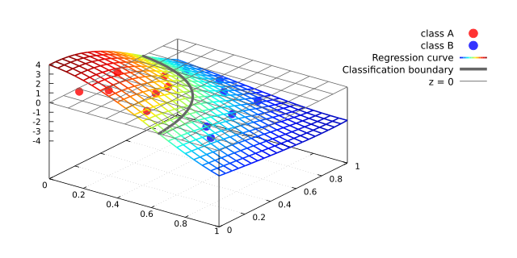
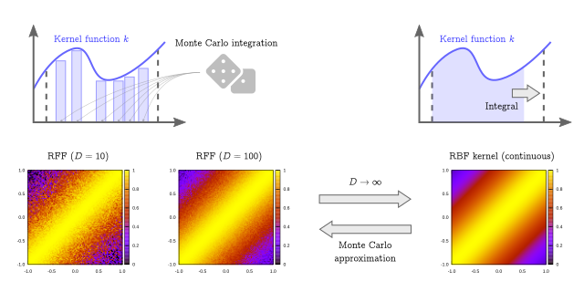

Tetsuya Ishikawa
Everything in the World is Made of Mathematics
Writings
拙作の書き物をご紹介するページです
サポートベクターマシンとカーネル回帰
関数解析の立場からカーネルサポートベクターマシンについて説明した文書です． まずは線形のサポートベクターマシンについて説明し，それを関数解析を用いてカーネル化する，という順序で解説しています．サポートベクターマシンの入門書としてはもちろんのこと，関数解析に興味を持つための入り口としてもお読み頂けると思います．実は，このアプローチの延長で，2007年に提案された Random Fourier Features がすぐに理解できます．RFF に関しては別文書にまとめてありますので，余裕があればそちらもご覧下さい．
GitHub RepositoryRandom Fourier Features
本文書は，2007年に提案された Random Fourier Features (以下，RFF と略します) について解説した文書です．古典的なカーネルサポートベクターマシンを事前に理解しておく必要がありますが，比較的最近の新鮮な結果に踏み込めるというのは若い方々にとっては良いのではないかなと思います．また，RFF は単純な深層学習の変形と見なすこともでき，そのことにも簡単に触れています．RFFをScikit-learnのように使えるようにした拙作のライブラリ rfflearn も宜しければどうぞ．
GitHub Repositoryガウス過程モデルとRandom Fourier Features
実務でデータ解析をしていると，予測した値の不確実性を評価したくなることが多々あります．ガウス過程モデルは予測の不確実性を評価できる数少ないモデルのひとつですが，学習時間，推論時間はカーネルサポートベクターマシンと同等であり，大規模データへの適用は困難と言わざるを得ません．そこでガウス過程モデルに Random Fourier Features を適用することで大規模データへの適用を可能にしてやろうというのが本文書の目的です．事前にガウス過程モデルと RFF を理解してからお読み頂くことを推奨します．元々は拙作のライブラリ rfflearn で使うために開発した手法であり，英語版は rfflearn のレポジトリで公開 しています．本文書はその日本語版，かつ少し冗長に説明したものという立ち位置です．
GitHub Repository確率論と完全加法族
本文書は，完全加法族の理解を通じて確率論に触れてみようと試みた文書です．確率とは何かを少しでも同僚に理解してもらいたくて工夫した結果，生まれた産物でもあります．また本文書の末尾では，完全加法族の応用についても述べますが，実はこれはパーコレーション理論の入り口でもあります．完全加法族は情報量を表すツールなのか！という実感を持って頂ければ幸いです．現在，文書修正中です．あまり期待せずにのんびりお待ちください．